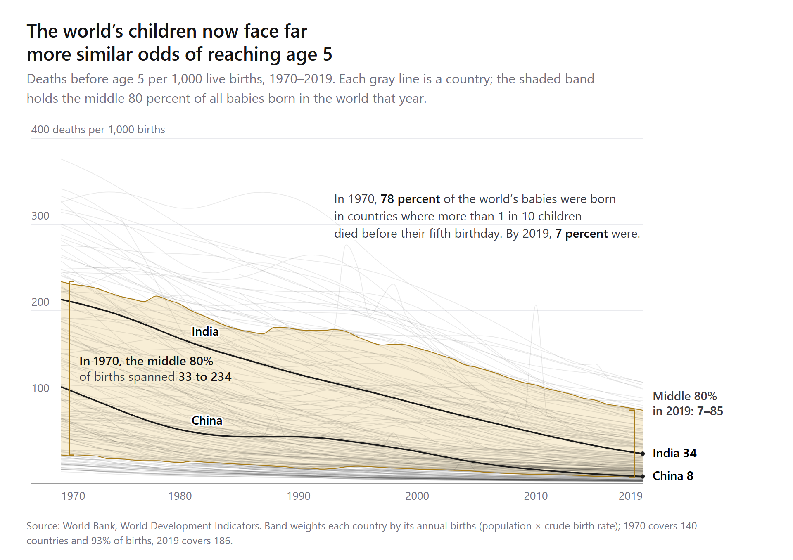
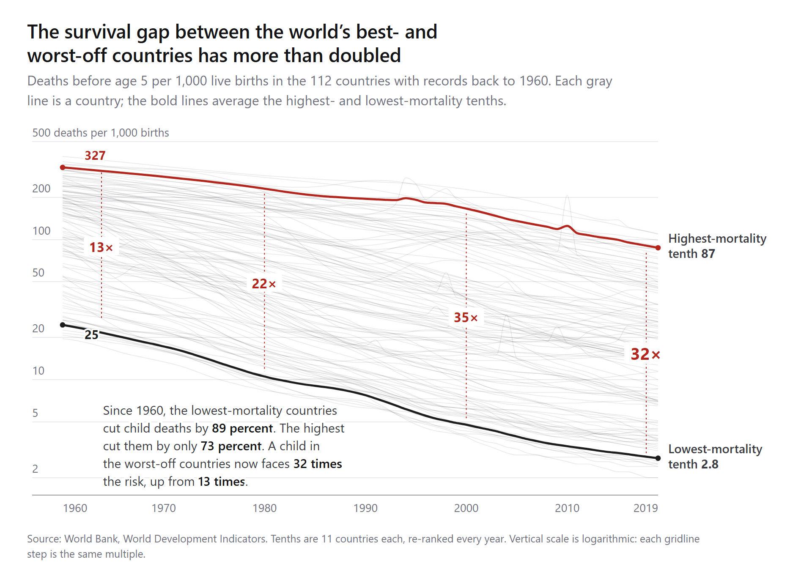

Are the world’s children converging on the same odds of survival? It depends how you count
In 1970, about one in seven children worldwide died before turning 5. By 2019 it was about one in 27, and seven in 10 babies were born in countries where more than 95 percent of children survive. Whether that progress pulled countries together depends on how you count. Using the World Bank’s under-five mortality series for 1960 to 2019, we built one chart arguing that countries are converging and one arguing that they are not. Both use the same data and the same marks, and neither contains a false number. What separates them is the unit (a child or a country), the measure of a gap (a difference or a ratio) and a handful of words.
Under-five mortality rates are converging across countries.
Use the Show decision markers button above each chart to see where each numbered design decision lives.
1The case for convergence
Count children instead of countries, and the picture is a funnel. In 1970, the middle 80 percent of the world’s newborns lived in countries where somewhere between 33 and 234 of every 1,000 children died before age 5. By 2019, that range had narrowed to 7 to 85.

1.1How we made this chart
Each decision is scored from −2 (fully deceptive) to +2 (fully earnest).
-
Count children, not countries
We estimated each country’s births (population × crude birth rate) and used them to weight the band’s 10th and 90th percentiles. That fits a proposition about children’s odds, which makes it defensible. It is also the most flattering lens available. India and China, which had 41 percent of 1970 births, cut child mortality steeply and carried most of the world’s newborns into the low range with them. Small countries that are still far behind, like Sierra Leone, Chad and the Central African Republic, barely move a births-weighted band. They survive only as faint lines above it. An unweighted band also narrows, but much less dramatically.
-
A linear axis, and a headline that assumes it
Deaths per 1,000 on an ordinary linear scale is the default nobody questions. But when every rate is falling, absolute distances shrink almost automatically, so the lines funnel together. On a log scale, as in the AGAINST chart, the same lines run nearly parallel. The headline, “far more similar odds,” quietly adopts the absolute reading. We did not truncate the axis or stretch the aspect ratio, since those tricks are easy to catch. The default does the work on its own.
-
A threshold picked for its contrast
The annotation reports the share of babies born where more than 1 in 10 children die before age 5: 78 percent in 1970, 7 percent in 2019. “One in 10” sounds like a natural cutoff. We chose it because it produces the most striking before-and-after. At 50 deaths per 1,000, the same statistic falls from 87 to 29 percent, which is still impressive but less arresting. Collapsing a distribution into a yes-or-no share also hides how far above the line the remaining 7 percent are.
-
Start in 1970, when the data can support weighting
The 1960 data cover only 112 countries and 64 percent of births (China and Nigeria are missing). By 1970 the series covers 140 countries and 93 percent of births. Starting earlier would have made the band look wider at the start, but it would compare different sets of children at each end. The source line discloses both coverage figures. This decision is earnest, and it costs the argument very little.
-
Highlight the success stories, leave the laggard gray
We labeled India and China because they have the most births, which sounds neutral. They also have two of the steepest declines in the dataset: 213 to 34, and 112 to 8. Nigeria has the third-largest birth cohort and still loses 117 children per 1,000. It has improved only 1.7 percent a year since 2010 and accounts for about 16 percent of all child deaths, yet it stays an unlabeled gray line. Selective highlighting looks like editorial curation, not omission.
2The case against
Now compare countries instead of children, and measure the gap as a ratio. Among the 112 countries with records back to 1960, the tenth with the highest child mortality had 13 times the rate of the tenth with the lowest. By 2019 it was 32 times. Both groups improved, but the countries that started best cut their rates by a larger share: 89 percent versus 73 percent.

2.1How we made this chart
Each decision is scored from −2 (fully deceptive) to +2 (fully earnest).
-
A fixed group of 112 countries since 1960
Keeping only countries observed in every year means the trend can’t be an artifact of new countries entering the data. This is the textbook choice, and it actually cuts against our argument. Nigeria, Niger, Mali, Chad and Somalia have no 1960 figures, and adding them would push the 2019 ratio higher. It buys credibility (“records back to 1960”) at a small cost. It falls short of +2 because starting in 1960 also anchors the comparison at the ratio’s low point.
-
A logarithmic scale
Demographers plot mortality on log scales because equal distances mean equal percentage changes. On this scale a steady ratio looks like a steady gap, so the space between the red and black lines never closes. Most readers, though, read vertical distance as an absolute difference. On a linear scale, the same two lines close from 303 deaths per 1,000 apart to 85. We disclosed the scale in the source line and through the uneven tick values (2, 5, 10, 20), which is honest but easy to miss.
-
Calling a ratio of death rates a “survival gap”
The headline says the “survival gap” more than doubled, and the large “13×” and “32×” labels supply the proof. Those labels are ratios of death rates. Measured as survival, the gap shrank. In 1960, 67 percent of children in the worst-off tenth reached age 5, against 98 percent in the best-off: a 30-point gap. In 2019 it was 91 percent against 99.7 percent, or 8 points. “Gap” lets readers pick whichever meaning they like, and the chart supplies only ours. It is the most consequential decision in either chart, and it is entirely verbal.
-
Compare the extremes, call them “tenths”
We averaged the 11 highest- and 11 lowest-mortality countries each year, re-ranked annually. In 2019 the bottom group is Iceland, Finland, Norway, Japan, Singapore and their peers, at 2 to 3 deaths per 1,000. Dividing by a number that small inflates any ratio. Using the births-weighted range from the FOR chart, the ratio still rises, but only from 7 to 12. The extremes make the strongest headline, and the word “tenths” makes them sound representative.
-
“Only 73 percent,” in alarm red
Cutting child deaths by 73 percent is one of the great achievements of the past 60 years. The word “only” turns it into a shortfall. We paired that word with an affective color choice: the worst-off group is drawn in saturated red while every other line stays gray, which reads as a warning. Both numbers are exact, so the slant lives entirely in one adverb and one hue. In a neutral blue and without “only,” the same chart would read as uneven progress rather than failure.
3Same numbers, two stories
The disagreement fits in a single table. Between the worst-off and best-off tenth of the same 112 countries, the difference in child mortality shrank by 72 percent, while the ratio more than doubled.
| Measure | 1960 | 2019 | Change |
|---|---|---|---|
| Deaths before age 5, per 1,000 | 327 vs. 25 | 87 vs. 2.8 | both fell |
| Difference, deaths per 1,000 | 303 | 85 | −72% |
| Survival to age 5, gap in points | 30 | 8 | −72% |
| Ratio of death rates | 13× | 32× | +140% |
Where our 10 decisions fall
Scored from −2 (deceptive) to +2 (earnest)
4What we learned
The decisions that mattered most were made before any line was drawn. Our two charts share a dataset, a chart type, a gray-line look and almost every year of data. What separates them is the unit (children or countries), the measure (difference or ratio) and a few words: “similar odds,” “survival gap,” “only.” The case for convergence was easy to make, because nearly any honest default, such as a linear axis, a population lens or a recent end date, makes a world in which every country improved look like it is coming together. The case against was hard until we noticed that the countries with the lowest mortality kept cutting their rates by a larger share than those with the highest. Once we committed to ratios, a log scale followed, and it looks more rigorous than the linear one. That is the point Helen Kennedy and her co-authors make about the work that conventions do. A log scale, a source line and a fixed sample all signal objectivity, and that objectivity lends authority to a slanted headline.
We now think of ethical visualization as making only the choices you would still defend to a reader who has seen the alternative. That suggests three tests. Is the choice justified on grounds independent of the conclusion it produces? Weighting by births passes, since the question is about children, but picking the “1 in 10” cutoff for its contrast fails. Is it disclosed where readers actually look? Our log scale is explained only in the source line, so it passes halfway. Does the chart leave readers believing something the data contradict? “Survival gap … more than doubled” fails outright, because survival converged. Research by Ha-Kyung Kong and colleagues found that slanted titles shape what readers remember even when the chart is neutral, and our own most deceptive decisions, a headline word and a highlight, were the ones a careful reader would be least likely to catch.
So is child mortality converging? In absolute terms and in survival terms, yes, dramatically. In relative terms, it diverged from 1960 until about 2010 and has eased slightly since. Each of our charts misleads mainly through what it leaves out. None of our individual techniques is unusual; each appears in published, respected graphics. That is why we don’t think a list of banned techniques can separate persuasion from deception. The line is crossed when the combination of choices leaves a reader with a belief they would abandon if they saw the table above.
5About the data
Data come from the course’s copy of the World Bank’s World Development
Indicators (light-and-salt/World-Bank-Data-by-Indicators,
health/health-raw-2021.csv): under-five mortality (SH.DYN.MORT),
population (SP.POP.TOTL), crude birth rate (SP.DYN.CBRT.IN)
and under-five deaths (SH.DTH.MORT), for the 217 entries assigned a World
Bank region (countries, not regional aggregates). Mortality is available for 1960
through 2019.
Births are estimated as population × crude birth rate ÷ 1,000. Weighted percentiles
interpolate along cumulative birth weights. The “tenths” in Figure 2 are the mean
of the 11 highest and 11 lowest rates among the 112 countries with 1960 data,
re-ranked each year. Charts were drawn with D3 and exported at twice screen
resolution. Code is in this repository (analysis/prep.py,
analysis/export.py, charts/chart.html). Live versions:
Figure 1,
Figure 2.
References: Kennedy et al., “The Work That Visualization Conventions Do” (2016); Kong et al., “Frames and Slants in Titles of Visualizations on Controversial Topics” (CHI 2018); Burns et al., “From Invisible to Visible” (IEEE TVCG 2022); Lan et al., “Affective Visualization Design” (IEEE TVCG 2024).